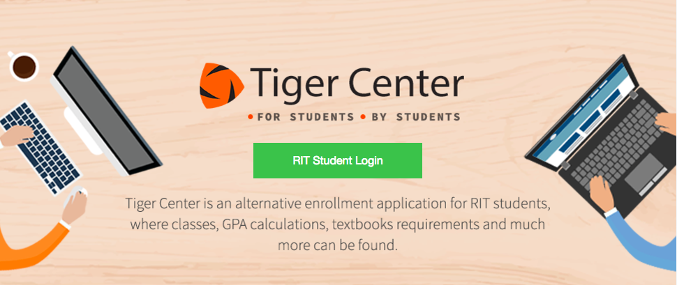

TigerCenter
TigerCenter is a site made by students, for students at the Rochester Institute of Technology, created to provide a more user-friendly interface than the often outdated, and difficult to navigate school websites. Created by a self-directed team of students guided by mentors and advisors from multidisciplinary fields, ranging from software engineering to business to web design, TigerCenter provides a more intuitive, well-designed, cohesive place for students to search for and enroll in classes, view their schedule, view dining locations around campus, and calculate their GPA as well as much more.
I worked at the Student IT Office responsible for creating and maintaining TigerCenter as a full-stack web developer, particularly focusing on the frontend. Originally written in AngularJS, TigerCenter was starting to show its age while serving an ever-increasing student body and it was decided that a rearchitecture of the original framework was necessary.
The Process
During the rearchitecture, we focused heavily on principles of software engineering and design in order to deliver a lightweight but high-performing, mobile first product. We used the iterative Agile methodology to shape our development process, running daily standups, conducting sprint demos, and gathering acceptance criteria from stakeholders.
As members of a multidisciplinary team consisting of three Web Developers, a Business Analyst, and a Web Designer, each member was expected to present to the project stakeholders and investors, conduct meetings, and interact with end-users in order to gather information on our target customer base. We conducted several rounds of user acceptance testing and analyzed the results in order to refine our work and ensure that the new website would meet our user base's every expectation.
Technologies Used


On the backend, TigerCenter is a Java project built with Apache Maven, using the Java Spring framework. It uses Angular 4 and jQuery for functionality, and HTML5, CSS, and Bootstrap for design.